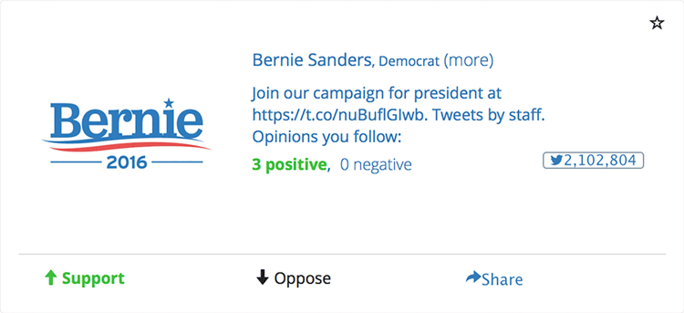
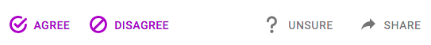
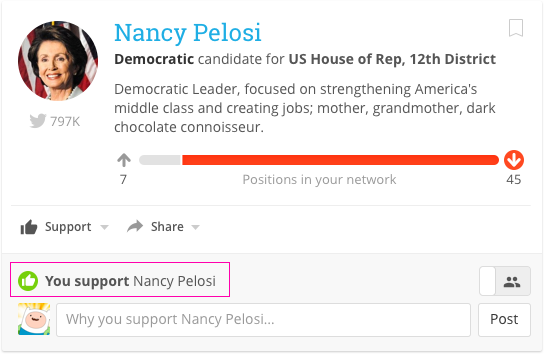
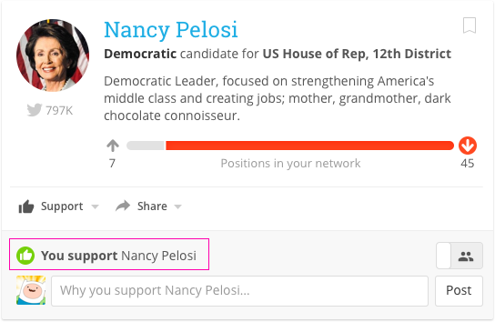
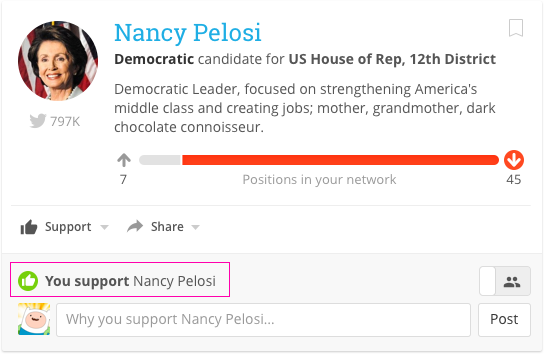

Harnessing people's trusted networks to increase voter engagement
Design for We Vote
The Challenge
Quickly and clearly communicate to users whether the majority of their network supports or opposes a candidate.
My Role
With the core functionality outlined, I worked to provide key elements with the appropriate emphasis in different contexts.
Starting from Wireframes
The basic functionality was already in place with wireframe-esque designs when I joined the project. My main goal was to help develop a modular and consistent way to make the information easily digestible.

Basic functionality was already implemented with 'wireframe' design
Comparing Similar Design Patterns
There are a handful of existing patterns for displaying opinions in a user’s network. I started by identifying the cases Facebook, Youtube, and Brigade were solving for and highlighting what similarities and differences there were with what We Vote was trying to accomplish.
Facebook has traditionally been all about ‘Likes’. With the recent introduction of alternative reactions, their focus is still about showing popularity of a post.
Simple, intuitive. Doesn’t display a positive/negative dynamic.
Youtube allows for explicit positive and negative votes. The design still highlights positive votes (likes), and this metric is still second to total video plays.
Reinforces 'positive' metrics.
Brigade is most similar to We Vote in presenting opinions being for or against cadidates, issues, and statements. They present the binary ‘for/against’ dynamic, but specifically refrain from displaying network opinions on an issue until you enter your own position (so as not to influence you). Once you do take a position, they show the percentage of the contingent you belong to, regardless of whether it’s the majority or minority.

Hides network position at first, then highlights your cohort, regardless of whether it's the majority or minority position
Trust your Network
After exploring a number of versions giving different emphasis to the user’s position in relation to their network’s position, we stuck with the decision to give emphasis to the user’s network position over their individual position.
Because each user creates their own network by choosing individuals and organizations to follow, the majority position is important to highlight. The user may ‘break’ from their network majority, but the network position is still given more emphasis in this view.

The user's network position is given prominence even if they select an opposing position.
*If you were looking closely, you might have noticed that the icons for the network position (arrows) are different than the icons below (thumbs up/down). Without going into too much detail here, this is to accommodate the fact that network positions are comprised of both explicit positions as well as softer 'ratings' that are more implicit.
What's Next
As a volunteer-based open-source project, the product development currently consists of extremely small cycles of iteration. A few areas I've already flagged for future iteration are:
Displaying a more neutral/mixed dynamic when a network position is relatively even (40–60%).
Showing additional context for the network positions, including select comments and endorsements from organizations and friends.
And of course, continuing to gather user feedback.


 
